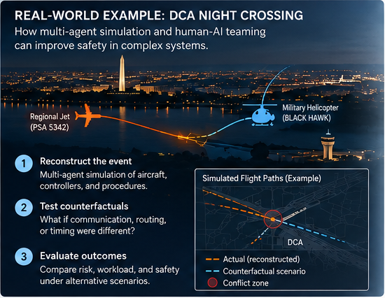

Case study · DCA
Night Crossing
A tightly timed operation in which no single person holds the whole picture.

The flight-path chart is illustrative rather than a verified experimental result.
Night Crossing is used as a problem of distributed decision-making. Information sits across pilots, controllers, procedures, communications, displays, aircraft, and organizational expectations. This account follows that methodological case. It is not a reconstruction of what each person knew, and it is not a finding about cause.
What makes the case hard


A later analyst can see trajectories, timings, and records that no participant had at the moment. A valid analysis refuses that advantage. Each modeled actor receives only the observations, communications, procedures, and expectations plausibly available then.
How the inquiry is supposed to work

- Several partial worlds Understanding is a reconstruction of those views, not a single narrative written after the fact.
- Tests, not hindsight A counterfactual is a constrained experiment, not a claim about what certainly would have happened.
- Micro and meso together Individual cognition matters. So do routines, roles, channels, and shared expectations.